Okuma notu. Rakamlar iki ayrı araştırmadan (dünya ve Türkiye taraması, 3 Kasım 2026) alınmıştır; her biri kaynakçadaki numaralı kaynaklara bağlanır [n]. Doğrulanamayan veriler metinde açıkça "doğrulanamadı" olarak işaretlidir. Üçüncü taraf tahminleri (ör. AppGoblin, pazar raporları) tahmin olarak sunulmuştur. Birim ekonomi bölümündeki maliyetler varsayımdır, ölçülmüş değer değildir.
Fotoğraftan yapay zekâ ile oda, cephe ve bahçe yeniden tasarımı hem dünyada hem Türkiye'de para kazandıran, kalabalık bir kategori. Ancak ürünler birbirine çok benziyor: aynı jenerik "fotoğraf yükle, stil seç, sonucu al" akışını haftalık abonelikle satıyorlar. Tasarımı satın alınabilir ürüne, TL bütçeye ve ustaya bağlayan, Türkçe ve Türkiye'ye özgü bir ürün yok.
Öneri. AI Room "Türkiye öncelikli, ticarete bağlı" bir ürün olarak konumlanmalı. Yol şöyle:
Faz 1 (6 hafta) önceliği şunlar:
Kullanıcının paylaştığı 15 ekran görüntüsü iki farklı ürün tipini gösteriyor:
AI Room ikinci kategoride yarışıyor. Birinci kategoriden ölçü ve plan disiplinini yol haritasına alıyor. Ekran görüntüleri telif nedeniyle rapora gömülmedi; akışlar aşağıda metinle anlatılıyor.
pro.airemodel.android [1][2].| Ekran | İçerik | AI Room karşılığı |
|---|---|---|
| Onboarding (3 kart) | "AI Interior Redesign" (New Flooring, Remove Objects, Your Room, Fill Spaces, Replace), "AI Exterior Redesign", "AI Garden Redesign"; tam ekran önce/sonra bölme; mor "Continue". | 3 slaytlı onboarding + KVKK aydınlatma metni. |
| Paywall | Stil şeridi, kilitli avantaj rozetleri, 3 plan kartı, "Secured with Apple Store. Cancel anytime", Restore/Terms/Privacy. | TL planlar katalogdan gelir; demo yükseltme (gerçek IAP Faz 1). |
| Home | PRO düğmesi; hikâye halkaları (Under Stairs, Nooks, Basement, Patio, Balcony); "Instant Remodel" kartı; AI Renovation Kit: Replace, Furniture Finder, Furnish Empty Room, Floor Plan (NEW), New Flooring, Rearrange Furniture, Exterior Redesign, Garden Redesign, Reference Style, Remove Objects; "You Might Like", "Beyond Ordinary" karuselleri; yüzen AI sohbet düğmesi. | Hero "Anında Yenile", araç ızgarası (PRO/YENİ rozetli), oda çipleri, stil karuseli, kredi rozeti, yüzen sohbet düğmesi. |
| AI sohbet | "Your AI-powered design chat": tasarım rehberliği, yeni görünümleri görselleştirme, tasarımı iyileştirme; "Upload Photo", "Ask AI". | Claude tabanlı Türkçe sohbet; görsel ekleme; dokununca uygulanan öneriler. |
| Inspire | İki sütunlu görsel ızgara. | İlham: admin'in öne çıkardığı tasarımlar + stil önizlemeleri. |
| Archive | Boş durum: "You have no designs yet", "Instant Remodel" çağrısı. | Tasarımlarım: favori filtresi, silme. |
| Settings | "Get AI Remodel Pro", Subscription: Free, Contact, FAQ, Terms, Privacy, v2.52.0. | Profil: misafir → kayıt, dil, plan, KVKK, hesabı sil. |
Referanslardan çıkan ürün gereksinimleri:
Tarama 25'ten fazla ürünü 6 segmentte kapsadı. Fiyatlar ve puanlar mağaza sayfaları, şirket siteleri ve haberlerden alındı. Yalnız üçüncü taraf kaynakta görülen değerler öyle belirtildi.
| Segment | Örnekler | Konum |
|---|---|---|
| Tüketici mobil AI yeniden tasarım | AI Remodel, Home AI (HubX), Arch (AppNation), Remodel AI, RoomGPT | Fotoğraf → stil; haftalık abonelik; en yüksek indirme hacmi. AI Room'un doğrudan rakipleri. |
| Web prosumer / emlakçı | Interior AI, HomeDesigns AI, REimagineHome, Spacely AI, Collov AI, Virtual Staging AI (Zillow) | Kredi tabanlı; sanal döşeme, toplu işlem, ticari lisans, video. |
| 2D/3D planlayıcılar | Live Home 3D, Planner 5D, Homestyler, Coohom, RoomSketcher, Floorplanner, Sweet Home 3D | Ölçü ve plan; AI render sonradan eklendi; ömür boyu lisans ve render başı ücret. |
| Tarama ve AR | Apple RoomPlan tabanlı uygulamalar, Polycam, Twindo (eski Canvas), magicplan | Gerçek ölçü, CAD çıktısı; üretken AI zayıf. |
| Perakende ve büyük teknoloji | IKEA Kreativ, Wayfair Muse, Pinterest Restyle, Amazon Room Decorator, Google Gemini "Nano Banana", ChatGPT | Satışa ya da reklama bağlı, kullanıcıya ücretsiz; temel restyle metalaşıyor. |
| İnsan tasarımcı pazarları | Houzz (Pro), Havenly, Decorilla | Oda başı $159–499 (Havenly) ile ~$2.200 (Decorilla) arası; AI daha çok profesyonel katmanda. |
| Ürün | Restyle | Stil | Maske | Silme | Değiştir | Boş oda | Dış cephe | Bahçe | Boya | Zemin | Ref. görsel | 2D plan | 3D | Tarama | AR | Alışveriş | Maliyet | Sohbet | Video / 360 | Pro / emlak | Türkçe |
|---|---|---|---|---|---|---|---|---|---|---|---|---|---|---|---|---|---|---|---|---|---|
| AI Remodel (PulseApps) | ✓ | ? | ? | ✓ | ✓ | ✓ | ✓ | ✓ | ✓ | ✓ | ✓ | ~ᵃ | ✗ | ✗ | ✗ | ~ᵃ | ✗ | ✓ᵃ | ✗ | ✗ | ✗ |
| Home AI (HubX) | ✓ | ? | ? | ~ | ~ | ✗ | ✓ | ✓ | ✓ | ~ | ✗ | ✗ | ✗ | ✗ | ✗ | ✗ | ~ | ✗ | ✗ | ✗ | ✗ |
| Arch (AppNation) | ✓ | 10+ | ✗ | ✗ | ✗ | ✗ | ? | ✓ | ~ | ✗ | ✗ | ✗ | ✗ | ✗ | ✗ | ~ | ✓ | ✗ | ✗ | ✗ | ✓ |
| Remodel AI (ReImage AI) | ✓ | 40+ | ✓ | ✓ | ✓ | ? | ✓ | ✓ | ✓ | ✓ | ✗ | ✗ | ✗ | ✗ | ✗ | ✗ | ✗ | ✗ | ✗ | ✗ | ✗ |
| RoomGPT | ✓ | ? | ✗ | ✗ | ✗ | ✗ | ✗ | ✗ | ✗ | ✗ | ✗ | ✗ | ✗ | ✗ | ✗ | ✗ | ✗ | ✗ | ✗ | ~ | ? |
| Interior AI | ✓ | 56 | ✓ | ✓ | ~ | ✓ | ✓ | ✓ | ✓ | ✗ | ✓ | ✗ | ~ | ✗ | ✗ | ~ | ✗ | ✗ | ✓ | ✓ | ? |
| HomeDesigns AI | ✓ | 200+ | ✗ | ✓ | ✓ | ✓ | ✓ | ✓ | ~ | ✓ | ✗ | ✓ | ✓ | ✗ | ✗ | ✓ | ✓ | ✗ | ✓ | ✓ | ? |
| REimagineHome | ✓ | ? | ~ | ✓ | ✓ | ✓ | ✓ | ✓ | ✓ | ~ | ✓ | ✗ | ✗ | ✗ | ✗ | ✓ | ✗ | ✓ | ✗ | ✓ | ? |
| Spacely AI | ✓ | ? | ~ | ✓ | ~ | ✓ | ✓ | ✓ | ✗ | ~ | ✓ | ✗ | ✗ | ✗ | ✗ | ✗ | ✗ | ✗ | ✗ | ✓ | ? |
| Collov AI | ✓ | ? | ✗ | ✓ | ~ | ✓ | ✓ | ✓ | ~ | ~ | ✗ | ✗ | ✗ | ✗ | ✗ | ✗ | ✗ | ✗ | ✓ | ✓ | ? |
| Homestyler | ✓ | ? | ✗ | ✗ | ✗ | ✓ | ? | ? | M | M | ✓ | ✓ | ✓ | ✗ | ? | ~ | ✗ | ✓ | ✓ | ✓ | ? |
| Planner 5D | ✓ | ? | ✗ | ✗ | ✗ | ✓ | ~ | ~ | M | M | ✗ | ✓ | ✓ | ✓ | ✗ | ✗ | ✗ | ~ | ✗ | ✓ | ✓ |
| Live Home 3D | ~ | 260+ | ✗ | ✗ | ✗ | ✗ | M | M | M | M | ✗ | ✓ | ✓ | ✓ | ✓ | ✗ | ✗ | ✗ | ✓ | ~ | ✗ |
| Coohom | ~ | ? | ✗ | ✗ | ✗ | ~ | ✓ | ? | M | M | ✗ | ✓ | ✓ | ✗ | ✗ | ~ | ✗ | ✗ | ✓ | ✓ | ? |
| magicplan | ✗ | – | ✗ | ✗ | ✗ | ✗ | ✗ | ✗ | ✗ | M | ✗ | ✓ | ~ | ✓ | ? | ✗ | ✓ | ✗ | ~ | ✓ | ✗ |
| RoomSketcher | ~ | ? | ✗ | ✗ | ✗ | ✗ | ✗ | ✗ | M | M | ✗ | ✓ | ✓ | ~ | ✗ | ✗ | ✗ | ✗ | ✓ | ✓ | ? |
| Floorplanner / Roomstyler | ✗ | – | ✗ | ✗ | ✗ | ✗ | ✗ | ✗ | M | M | ✗ | ✓ | ✓ | ✗ | ✗ | ~ | ✗ | ✗ | ? | ✓ | ? |
| Sweet Home 3D | ✗ | – | ✗ | ✗ | ✗ | ✗ | ✗ | ✗ | M | M | ✗ | ✓ | ✓ | ✗ | ✗ | ✗ | ✗ | ✗ | ✗ | ✗ | ? |
| Polycam | ✗ | – | ✗ | ✗ | ✗ | ✗ | ✗ | ✗ | ✗ | ✗ | ✗ | ✓ | ✓ | ✓ | ? | ✗ | ✗ | ✗ | ✗ | ✓ | ? |
| Twindo (eski Canvas) | ✗ | – | ✗ | ✗ | ✗ | ✗ | ✗ | ✗ | ✗ | ✗ | ✗ | ✓ | ✓ | ✓ | ✗ | ✗ | ✗ | ✗ | ✗ | ✓ | ? |
| IKEA Kreativ | ✗ | – | ✗ | ✓ | ✓ | ~ | ✗ | ✗ | ✗ | ✗ | ✗ | ✗ | ✓ | ✓ | ~ | ✓ | ✗ | ✗ | ✗ | ✗ | ? |
| Pinterest Restyle (beta, ABD/CA) | ✓ | ~ | ✓ | ✓ | ✓ | ~ | ✗ | ~ | ✓ | ✗ | ✓ | ✗ | ✗ | ✗ | ✗ | ~ | ✗ | ~ | ✗ | ✗ | ✗ |
| Wayfair Muse | ~ | ? | ✗ | ✗ | ~ | ✗ | ✗ | ✗ | ✗ | ✗ | ~ | ✗ | ✗ | ✗ | ✗ | ✓ | ✗ | ✗ | ✗ | ✗ | ✗ |
| Gemini "Nano Banana" / ChatGPT | ✓ | prompt | ~ | ✓ | ✓ | ✓ | ✓ | ✓ | ✓ | ✓ | ✓ | ✗ | ✗ | ✗ | ✗ | ~ | ~ | ✓ | ✗ | ✗ | ✓ |
İşbirliği: Gerçek çok kullanıcılı projeler yalnız profesyonel ve planlayıcı katmanlarında var (Homestyler Team, Coohom Elite, RoomSketcher Team, Spacely Studio/Agency). Tüketici AI uygulamaları yalnız paylaşma ve dışa aktarma sunuyor. Kaynak: dünya taraması [1]–[57].
| Ürün | Şirket · ülke | Platform | Fiyat | Puan (adet) / ölçek |
|---|---|---|---|---|
| Home AI | HubX · Türkiye | iOS, Android | ABD: haftalık $4,99–14,99, yıllık $19,99–39,99. TR: haftalık ₺199,99–799,99, yıllık ₺899,99–1.499,99 | ABD 4,5 (161 bin); Android 10 milyon+ indirme |
| Arch | AppNation · Türkiye | iOS | Haftalık $6,99–9,99, yıllık $39,99–89,99 | 4,6 (24 bin) |
| Remodel AI | REIMAGE AI INC. | iOS, Android, web | Haftalık $4,99–9,99, aylık $6,99–9,99, yıllık $39,99–89,99 | 4,7 (15 bin) |
| RoomGPT | ? (açık kaynak kökenli) | web | Tek seferlik kredi: $9 / $29 (üçüncü taraf) | 4 milyon+ kullanıcı iddiası |
| Interior AI | Pieter Levels · NL | web | Aylık $49–199; yıllık $349–1.199 | Gelir ~40–50 bin $/ay (doğrulanamadı) |
| HomeDesigns AI | ? | web | Aylık $27–37 (üçüncü taraf); 24 saatte 3 ücretsiz kredi | 2,8 milyon kullanıcı iddiası |
| REimagineHome | Styldod · ABD | web | Aylık $14–99 | ? |
| Spacely AI | GD Asya (doğrulanamadı) | web + CAD eklentileri | 40 ücretsiz kredi; 200 kredi $9 … 5.000 kredi $150 | 440 bin kullanıcı iddiası |
| Collov AI | Collov Labs · ABD | web | Aylık $27–170 (üçüncü taraf) | 1 milyon+ kullanıcı, 300+ şirket |
| Homestyler | Easyhome · Çin | web, iOS, Android | Pro $4,9/ay; Master $9,9/ay; Team $19,6/koltuk; render $0,99–3,99 | ? |
| Planner 5D | Planner5D UAB · Litvanya | iOS, Android, web | Premium $19,99/ay veya $59,99/yıl; Professional $49,99/ay veya $399,99/yıl | 4,4 (43 bin); 64M / "120M+" kullanıcı (çelişkili) |
| Live Home 3D | BeLight · Ukrayna | iOS, macOS, Windows, visionOS | Std $6,99/ay, $24,99/yıl, $59,99 ömür boyu; Pro $14,99/ay, $49,99/yıl, $129,99 | 4,6 (19 bin) |
| Coohom | Manycore · Çin | web | Pro $29, Elite $69 | G2 4,4 (132) |
| magicplan | Kanada? | iOS, Android | Aylık $12,99–89,99; yıllık $129,99–899,99 | 4,7 (41 bin) |
| RoomSketcher | RoomSketcher AS · Norveç | web, masaüstü | Pro $24/ay; Team $70/ay; 3D foto $4 | ? |
| Polycam | Polycam Inc. | iOS, Android, web | Pro $26,99/ay veya $199,99/yıl | 4,6 (44 bin) |
App Store verileri 3 Kasım 2026'da Apple iTunes TR uç noktalarından çekildi: Grafik ve Tasarım hasılat listesi RSS'i ve lookup API [58]. Google Play Türkiye sıralamaları ve fiyatları doğrulanamadı.
| Uygulama | Satıcı | TR puanı (adet) | Türkçe | TR fiyat örnekleri | TR sırası |
|---|---|---|---|---|---|
| Homely AI | Kmaster Ltd | 3,7 (138) | ✓ | ₺399,99–2.499,99 (paket adı yok) | G&T hasılat #3 |
| ReRoom AI | GM UniverseApps | 4,1 (1.796) | ✓ | ₺249,99–3.999,99 | #4 |
| DecAI | Cool Summer Ltd | 4,4 (694) | ✓ | Haftalık ₺229,99–499,99; yıllık ₺599,99–2.499,99 | #8 |
| AI Remodel | PulseApps Solutions OÜ | 4,3 (535) | ✗ | Haftalık ₺229,99–599,99; aylık ₺999,99; yıllık ₺2.499,99 | #14 (ücretsiz #22) |
| CamPlan | CamPlan AI | 4,6 (843) | ✓ | — | #23 |
| Home AI | HubX | 4,6 (3.340) | ✗ | Haftalık ₺199,99–799,99; yıllık ₺899,99–1.499,99 | #33 |
| Arch | AppNation | 4,3 (301) | ✓ | Haftalık ₺299,99–499,99; yıllık ₺1.299,99–2.999,99 | #87 |
| Ruma | EXXE Dijital Teknoloji A.Ş. | 4,4 (66) | ✓ | Haftalık ₺399,99–499,99; yıllık ₺1.299,99–3.499,99; ömür boyu ₺4.999,99 | #99 |
| Planner 5D | Planner5D UAB | 4,4 (2.771) | ✓ | Haftalık ₺174,99; yıllık ₺1.299,99–4.999,99; PRO paketleri yıllık ₺14.999,99 | Yaşam Tarzı hasılat #54 |
| Home Planner AI | Room Planner Ltd | 4,6 (4.299) | ✓ | Haftalık ₺199,99; yıllık ₺1.399,99; işletme ₺4.999,99 | Yaşam Tarzı #67 |
| Homestyler | Homestyler (Şanghay) | 4,4 (264) | ✗ | Haftalık ₺99,99; aylık ₺189,99; AI üyeliği ₺999,99/ay, ₺9.999,99/yıl | İlk 100'de yok |
| Live Home 3D | BeLight | 4,6 (314) | ✗ | doğrulanamadı | — |
Çıkarımlar
| Şirket / ürün | Şehir · platform | Özellikler ve fiyat | Durum ve finansman |
|---|---|---|---|
| HubX – Home AI | İzmir merkez, İstanbul ofisi · iOS | AI iç tasarım ve oda planı. Haftalık ₺199,99–799,99; yıllık ₺899,99–1.499,99. Türkçe dil listesinde yok. | Point72'den 75 milyon $'a kadar yatırım, 1,2 milyar $ değerleme; 40'tan fazla uygulama, 600 milyondan fazla kullanıcı [59] |
| AppNation – Arch | İstanbul (Şişli) · iOS | AI ev tasarımı ve maliyet tahmini; Türkçe var. | Kendi beyanıyla yaklaşık 150 milyon $ değerleme, 90 milyon indirme, yaklaşık 500 bin abone [60][61] |
| EXXE – Ruma | doğrulanamadı · iOS | İç mekân, dış cephe, bahçe; ömür boyu ₺4.999,99 dahil. | Mart 2025'te yayınlandı; finansman doğrulanamadı [62] |
| Syntina | doğrulanamadı · iOS | Eskiz, foto ve plandan render; tek görselden 3D; video; kredi sistemi. | Bağımsız geliştirici, Haziran 2026; 5,0 (6 puan) [63] |
| Oda Studio | San Francisco (YC) · web/B2B | Emlak fotoğraflarına sanal döşeme, kapak fotoğrafı seçimi. | 2,8 milyon $ (2021). Alan adı satılık; güncel durumu doğrulanamadı [64] |
| artlabs | doğrulanamadı · B2B SaaS | E-ticaret için 3D/AR modeller. | 700 bin $ tohum (2022); güncel durum doğrulanamadı [65] |
| Boxlin · QuickStaging | web | 3D ev planlama (2018) · boş ilan fotoğrafını döşeme (2026). | Durumları doğrulanamadı [66][67] |
| GenRoom (Türk değil) | Londra LLP · web | Türkçe; "Osmanlı ilhamlı" ve "modern Türk" stilleri; sahibinden/hepsiemlak boyutlarında çıktı. 9,99–39,99 $ kredi paketi, tasarım başı 0,27–0,56 $; emlakçıya foto başı "₺15" iddiası. | Kendi beyanı 66.184 kullanıcı; kökeni Rusya pazarındaki RoomAI [68][69] |
Yöntem: TR App Store açıklamaları ve web sayfaları. "✗", özelliğin açıklamada geçmediğini gösterir; özelliğin olmadığını kanıtlamaz.
| Marka | AR | 3D / planlayıcı | AI | Not |
|---|---|---|---|---|
| IKEA Türkiye | ✓ | ✓ | ✗ | Seçili ürünlerde AR; web'de 39 planlayıcı (PAX, BESTÅ, mutfak, banyo, dış mekân). Kreativ TR'de görülmedi [70][71] |
| Karaca | ✓ | — | ~ | "Evinde nasıl duracağını gör" AR; ChatGPT içinde AIDA alışveriş asistanı (16 Temmuz 2026). Oda görselleştirmesi yok [72][73] |
| Koçtaş | ✗ | ~ | ✗ | Ücretli mutfak keşfi (₺175–320, sayfa eski); Ustabilir usta pazarının sahibi [74][75] |
| Vivense, Evidea, Bellona, Mudo, English Home, Madame Coco | ✗ | ✗ | ✗ | Açıklamalarda yok; Bellona yalnız renk/model karşılaştırması |
| Alfemo · Enza Home | ✗ | ~ | ✗ | "Alfemo Designer" konfigüratörü (2024) · katalog uygulaması (2022) [76] |
| İstikbal, Doğtaş, Kelebek, Çilek, Bauhaus TR, Tekzen | ? | ? | ? | doğrulanamadı; Bauhaus uygulaması 2,6★ (2024) |
| Marshall (AkzoNobel) | ✓ | — | ✗ | Gör&Boya: duvarı sanal boyama (695 puan, Eylül 2026'da güncellendi) [77] |
| Filli Boya · Dyo | ~ | — | ✗ | i-Colour ile fotoğrafta boyama · Dyo'da görselleştirici yok [78][79] |
| Kalekim · NG Kütahya · Ege · VitrA | ~ | ✓ | ✗ | KaleCore 2D/3D/AR/VR banyo; NG 3D kartela ve sanal showroom; Ege "Room Scene" (2020); VitrA VitreAlity AR (2015) [80][81][82] |
| Hepsiburada · Trendyol | ? | — | ~ | Hepsiburada'da "Üzerinde Gör" var; mobilyada çalıştığı doğrulanamadı [83] |
| Platform | AI / görsel özellikler | Rol |
|---|---|---|
| sahibinden | SahiDeko (Haziran 2025): Profesyonel Emlak Ofisi kullanıcılarına Modern, İskandinav, Rustik ve Klasik stillerle sanal döşeme. sahiAI çatısı altında Fotobot, Sanal Tur ve sohbetle arama da var (Şubat 2026). Fiyatı doğrulanamadı [84][86] | Emlakta doğrudan rakip; talebin kanıtı |
| Hepsiemlak | İlanları AI ile İngilizce ve Rusçaya çeviriyor; sanal döşeme yok [87] | Ortak / kanal adayı |
| Emlakjet + Endeksa | AR ile ilan keşfi, drone görünümü, güneş-gölge analizi; Endeksa'da AI değerleme ve "Atlas" asistanı [88][89] | Ortak adayı (değerleme + yeniden tasarım) |
| Armut | 4,78★ (157 bin). İstanbul'da 3.314 iç mimar; iç mimar talepleri ₺52.000–1.000.000. AI doğrulanamadı [90] | Usta ve iç mimar eşleştirme kanalı |
| Ustabilir (Koçtaş) | Komisyonsuz usta pazarı; ürünlerde Koçtaş indirimi [75] | Malzeme + usta paketi ortağı |
| Gösterge | Değer | Kaynak |
|---|---|---|
| 2025 konut satışı | 1.688.910 (+%14,3, rekor); ikinci el 1.148.124; ipotekli 236.668 | [97] |
| Ocak–Eylül 2026 konut satışı | 1.092.919 (−%7,2); ipotekli satış +%24,7 | [98] |
| 2025 yapı ruhsatı / iskân | 1.111.852 / 673.575 daire (ikincil kaynak, TÜİK bülteniyle doğrulanmadı) | [99] |
| Hanehalkı (2025) | 26.977.795 hane; ortalama 3,08 kişi; tek kişilik hane %20,5 | [100] |
| İstanbul kentsel dönüşüm (2012'den beri) | 1,298 milyon bağımsız bölüm: 1,007 milyonu tamamlandı, 291 bini sürüyor (Ağustos 2026) | [101] |
| Ülke geneli dönüşüm | 2,51 milyon bağımsız bölüm (Mart 2026) | [102] |
| "Yarısı Bizden" kampanyası | İstanbul'da 384.553 bölüm; son tarih 31.12.2026 | [103] |
| Deprem bölgesi konutları | 2025 sonu hedefi 452.983 birim. 15 Kasım 2025'te 350 bininci teslim yapıldı. Hedefin tamamen gerçekleştiği doğrulanamadı. | [104][105] |
| Mobilya dış ticareti (2025) | İhracat 4,6 milyar $; ithalat +%25 ile 1,4 milyar $'ın üzerinde. İç pazar büyüklüğü doğrulanamadı. | [106] |
| E-ticaret (ETBİS, 2025) | 4,567 trilyon TL (+%52,2); perakende 2,5 trilyon TL | [107] |
| İnternet / online sipariş (2026) | Bireylerin %92,3'ü internet kullanıyor; %60,0'ı internetten sipariş veriyor | [108] |
| Mobil işletim sistemi payı | Android %74,18 · iOS %25,81 (StatCounter, Temmuz 2026, web trafiği) | [109] |
| Ödeme gücü | Net asgari ücret ₺28.075,50; TÜFE yıllık %29,73 (Eylül 2026). Ekim verisi doğrulanamadı. | [110][111] |
| Abonelik gelirinin kaynağı | Türk geliştiricilerin abonelik gelirinin %89,2'si yurt dışından; ABD %35,6 (RevenueCat, Eylül 2025–Ağustos 2026) | [112] |
AI Remodel fiyatının ödeme gücüne oranı (araştırmanın kendi hesabı): yıllık plan net asgari ücretin yaklaşık %8,9'u. Haftalık plan aylık yaklaşık ₺1.733'e denk geliyor, bu da yaklaşık %6,2.
| Özellik | AI Remodel | Home AI | Arch | Interior AI | HomeDesigns AI | Planner 5D | Live Home 3D | SahiDeko | GenRoom | AI Room MVP | AI Room yol haritası |
|---|---|---|---|---|---|---|---|---|---|---|---|
| Fotoğraftan yeniden tasarım | ✓ | ✓ | ✓ | ✓ | ✓ | ✓ | ~ | ~ | ✓ | ✓ | ✓ |
| Stil sayısı | ? | ? | 10+ | 56 | 200+ | ? | 260+ | 4 | ? | 15 | 15+ |
| Türk / Anadolu stilleri | ✗ | ✗ | ✗ | ✗ | ✗ | ✗ | ✗ | ✗ | ✓ | ✓ | ✓ |
| Maske / bölge düzenleme | ? | ? | ✗ | ✓ | ✗ | ✗ | ✗ | ? | ? | ✗ | ✓ |
| Nesne silme / odayı boşaltma | ✓ | ~ | ✗ | ✓ | ✓ | ✗ | ✗ | ? | ? | ✓ | ✓ |
| Eşya değiştirme | ✓ | ~ | ✗ | ~ | ✓ | ✗ | ✗ | ? | ? | ✓ | ✓ |
| Boş odayı döşeme (sanal döşeme) | ✓ | ✗ | ✗ | ✓ | ✓ | ✓ | ✗ | ✓ | ? | ✓ | ✓ |
| Dış cephe | ✓ | ✓ | ? | ✓ | ✓ | ~ | M | ? | ? | ✓ | ✓ |
| Bahçe / peyzaj | ✓ | ✓ | ✓ | ✓ | ✓ | ~ | M | ? | ? | ✓ | ✓ |
| Duvar boyası | ✓ | ✓ | ~ | ✓ | ~ | M | M | ? | ? | ✓ | ✓ |
| Zemin | ✓ | ~ | ✗ | ✗ | ✓ | M | M | ? | ? | ✓ | ✓ |
| Referans görselden stil | ✓ | ✗ | ✗ | ✓ | ✗ | ✗ | ✗ | ? | ? | ✓ | ✓ |
| 2D kat planı | ~ᵃ | ✗ | ✗ | ✗ | ✓ | ✓ | ✓ | ? | ? | ✗ | ✓ |
| 3D görünüm | ✗ | ✗ | ✗ | ~ | ✓ | ✓ | ✓ | ? | ? | ✗ | ~ |
| LiDAR / oda tarama (ölçü) | ✗ | ✗ | ✗ | ✗ | ✗ | ✓ | ✓ | ? | ? | ✗ | ✓ |
| AR yerleştirme | ✗ | ✗ | ✗ | ✗ | ✗ | ✗ | ✓ | ? | ? | ✗ | ~ |
| Alışveriş (gerçek ürün) | ~ᵃ | ✗ | ~ | ~ | ✓ | ✗ | ✗ | ? | ? | ~ | ✓ |
| Maliyet / bütçe tahmini | ✗ | ~ | ✓ | ✗ | ✓ | ✗ | ✗ | ? | ? | ✓ | ✓ |
| TL fiyat + Türk mağaza linki | ✗ | ✗ | ✗ | ✗ | ✗ | ✗ | ✗ | ✗ | ✗ | ✓ | ✓ |
| AI tasarım sohbeti | ✓ᵃ | ✗ | ✗ | ✗ | ✗ | ~ | ✗ | ? | ? | ✓ | ✓ |
| Video / 360 | ✗ | ✗ | ✗ | ✓ | ✓ | ✗ | ✓ | ? | ? | ✗ | ✓ |
| Pro / emlakçı özellikleri | ✗ | ✗ | ✗ | ✓ | ✓ | ✓ | ~ | ✓ | ✓ | ✗ | ✓ |
| Türkçe arayüz | ✗ | ✗ | ✓ | ? | ? | ✓ | ✗ | ✓ | ✓ | ✓ | ✓ |
| Android uygulaması | ✓ | ✓ | ✗ | ✗ | ✗ | ✓ | ✗ | ? | ✗ | ✓ | ✓ |
| Web sürümü | ? | ? | ✗ | ✓ | ✓ | ✓ | ✗ | ✓ | ✓ | ✓ | ✓ |
| Reklamsız / reklam takibi yok | ✗ | ? | ? | ? | ? | ? | ? | ? | ? | ✓ | ✓ |
| Giriş fiyatı | ₺229,99+/hf | ₺199,99+/hf | ₺299,99+/hf | $49+/ay | ~$27/ay | ₺174,99/hf | $6,99/ay | ? | $9,99+ paket | ₺149,99/hf | ₺149,99/hf |
Rakip değerleri dünya ve Türkiye taramalarından alındı [1]–[124].
| Uygulama | Haftalık | Aylık | Yıllık | Not |
|---|---|---|---|---|
| AI Remodel | ₺229,99–599,99 (ekranda ₺399,99) | ₺999,99 | ₺2.499,99 | Türkçe yok; reklam + IAP |
| Home AI (HubX) | ₺199,99–799,99 | — | ₺899,99–1.499,99 | Türkçe yok |
| Arch (AppNation) | ₺299,99–499,99 | — | ₺1.299,99–2.999,99 | Türkçe; maliyet tahmini |
| Ruma (EXXE) | ₺399,99–499,99 | — | ₺1.299,99–3.499,99 | Ömür boyu ₺4.999,99 |
| DecAI | ₺229,99–499,99 | — | ₺599,99–2.499,99 | Türkçe |
| ReRoom AI · Homely AI | ₺249,99–3.999,99 · ₺399,99–2.499,99 (paket adları yayınlanmamış) | Hasılat #4 · #3 | ||
| Planner 5D | ₺174,99 | — | ₺1.299,99–4.999,99 | PRO paketleri ₺14.999,99/yıl |
| Home Planner AI | ₺199,99 | — | ₺1.399,99 | İşletme ₺4.999,99 |
| Homestyler | ₺99,99 | ₺189,99 | AI: ₺9.999,99 | AI üyeliği ₺999,99/ay |
| AI Room (öneri, MVP kataloğu) | ₺149,99 | ₺349,99 | ₺1.299,99 | Günde 3 ücretsiz üretim; reklamsız |
Ödeme gücü (kendi hesabımız; net asgari ücret ₺28.075,50 [110]):
| # | Boşluk (kanıt) | AI Room yanıtı | Durum |
|---|---|---|---|
| 1 | Yapı korunmuyor: pencere, kapı ve duvar değişiyor; oda tipi yanlış sınıflanıyor (AI Remodel, Remodel AI yorumları) [1][10]. | Her prompt'ta zorunlu "kamera açısı, geometri, pencere, kapı ve tavan aynı kalsın" kalıbı; oda tipi kullanıcı seçimiyle İngilizce tanımla gönderiliyor. Faz 2'de derinlik/kenar koşullama ve kalite değerlendirme seti. | MVP Faz 2 |
| 2 | Gerçek ölçü yok: orantısız büyük mobilya. Tarama + fotogerçekçi restyle + sığma kontrolünü birleştiren yok. | RoomPlan/LiDAR ile ölçü ve ölçek farkındalıklı yerleştirme. | Faz 3 |
| 3 | Yerel ve satın alınabilir ürün yok: alışveriş linkleri ABD kataloglarına bağlı; Türk mağazası yok [37][38][39]. | Analizde TL fiyat aralıklı ürün listesi ve Trendyol / Hepsiburada / IKEA TR arama linkleri. Faz 2'de affiliate ve katalog eşleştirme. | MVP Faz 2 |
| 4 | Yineleme zor: sonucu düzenleyememe, çoklu fotoğraf tutarlılığı yok. | Aynı girdiyle yeni araç/stil, varyant seçimi, "Sohbette sor". Faz 2'de maske/fırça, sonuç üzerinden düzenleme, oda içi tutarlılık. | MVP Faz 2 |
| 5 | Tasarım → bütçe → usta yolu kopuk: Arch ve HomeDesigns yalnız kaba tahmin veriyor; Armut ve Ustabilir ayrı uygulamalar [90]. | TL tadilat kalemleri ve toplam bütçe. Faz 2'de Armut/Ustabilir'den teklif alma. | MVP Faz 2 |
| 6 | Türkçe ve yerel stil zayıf: AI Remodel, Home AI, Live Home 3D Türkçe değil. Yerel stil yalnız GenRoom'da var [68]. | TR öncelikli arayüz (EN seçenekli). 5 yerel stil: Modern Türk, Osmanlı Klasik, Kapadokya Taş Ev, Ege, Rustik Köy Evi. Salon/oturma odası ayrımı, balkon. Türkçe sohbet. | MVP |
| 7 | Güven sorunu: $10/hafta, paywall döngüleri, reklam takibi. | Haftalık ₺149,99, günde 3 ücretsiz, reklamsız. Paywall yalnız 402 ve PRO özelliklerinde açılıyor. "Aynı yöntemle iptal" ilkesi Faz 1'de. | MVP |
| 8 | Emlakta sanal döşeme dar: SahiDeko'da 4 Batı stili var; Hepsiemlak ve Emlakjet'te sanal döşeme yok [84][87][88]. | "Boş odayı döşe" ve "Nesne sil (tüm odayı boşalt)" MVP'de. Faz 2'de toplu işlem, portal boyutları, "sanal olarak döşenmiştir" etiketi. | MVP Faz 2 |
| 9 | Android payı %74 ama rakipler iOS odaklı (Arch, Ruma yalnız iOS) [109]. | Expo ile iOS, Android ve web tek kod tabanında; ayrıca Next.js web uygulaması. | MVP |
| 10 | Uyum sıkılaşıyor: KVKK, abonelik, AI reklam etiketi. | EXIF/GPS silme, hesap silme, ücretsiz planda "Yapay zekâ ile oluşturulmuştur" etiketi, admin MFA ve denetim kaydı. Faz 1'de standart sözleşme ve bildirim, yüz maskeleme. | MVP Faz 1 |
"Odanı saniyeler içinde yeniden tasarla; neye mal olacağını ve nereden alacağını hemen gör."
AI Room, Türkiye'de ev sahibi, kiracı, yeni evlenen ve kentsel dönüşümle yeni daireye geçen kullanıcıya hizmet eder. İkinci aşamada emlakçı ve müteahhide de hizmet eder.
Hedef, yapay zekâ ile oluşturulan tasarımı Türkçe, TL ve yerel ticaret ile somut bir alışveriş ve tadilat planına dönüştüren ilk uygulama olmak.
Her temel özellik için tablo dört şeyi gösteriyor: bu özelliği hangi dünya ürünlerinin sunduğu, araştırmada görülen kullanıcı şikâyetleri ve sınırlar, AI Room'un MVP'deki karşılığı, yol haritasındaki adım. Kaynakta bulunmayan bilgi "doğrulanamadı" diye işaretlendi. ᵃ yalnız kullanıcının ekran görüntülerinde görüldü.
| Özellik | Dünya örnekleri | Kullanıcı şikâyetleri / sınırlar | AI Room — MVP'de | AI Room — yol haritası |
|---|---|---|---|---|
| Fotoğraftan yeniden tasarım | AI Remodel ("Instant Remodel"), Home AI, Arch (10+ stil), Remodel AI (40+), Interior AI (56 stil, 68 oda), HomeDesigns AI (200+ stil, "Structure-Lock"), Gemini/ChatGPT (prompt ile, ücretsiz) [1][5][9][10][15][16][42] | Pencere, kapı ve duvarlar "yarı yarıya" değişiyor; yatak odası oturma odasına dönüşüyor (AI Remodel). Stok görsel hissi (Arch). Fotoğraf kırpılıyor (Home AI). | 15 stil, 5'i yerel. Her prompt'ta yapı koruma cümlesi; oda tipi kullanıcı seçimi; 1–4 varyant; gerçek Gemini çıktısında pencere ve perspektif korundu (Şekil A). | Faz 1 kalite değerlendirme seti; Faz 2 derinlik/kenar koşullama; stil kataloğu admin ile büyür. |
| Boş odayı döşeme (sanal döşeme) | AI Remodel ("Furnish Empty Room"), Interior AI, HomeDesigns, REimagineHome, Spacely, Collov (çok açılı tutarlı döşeme), Zillow / Virtual Staging AI, SahiDeko (4 stil), GenRoom [15]–[22][68][84] | Orantısız büyük mobilya (AI Remodel). SahiDeko yalnız Profesyonel Emlak Ofislerine açık. Gerçeğe aykırı ilan fotoğrafına ceza riski [124]. | "Boş Odayı Döşe" aracı + yerel stiller; ücretsiz planda AI etiketi. | Faz 2: toplu emlakçı işleme, portal boyutları, "sanal olarak döşenmiştir" etiketi. Faz 3: ölçek farkındalığı. |
| Nesne silme / odayı boşaltma | AI Remodel ("Remove Objects"), Interior AI, HomeDesigns, REimagineHome, Spacely, Collov, IKEA Kreativ (mevcut mobilyayı siler), Pinterest Restyle (dokunarak sil), Remodel AI (kement maske) [10][37][38] | Remodel AI: otomatik maske hatalı, düzenleme seçilen alanın dışına taşıyor, maskelemede çökme. | "Nesne Sil": hedefi metinle tarif etme veya "odayı tamamen boşalt" anahtarı. | Faz 2: fırça/maske ile bölge düzenleme. |
| Eşya değiştirme | AI Remodel ("Replace"), Remodel AI, HomeDesigns, REimagineHome, IKEA Kreativ (IKEA ürününü yerleştirme), Pinterest (dokunarak değiştir) | Home AI'da değiştirme kısmi. Ürünler ABD kataloglarına bağlı. | "Değiştir": hedef → yerine metin alanları. | Faz 2: Türk perakende kataloğundan gerçek ürünle değiştirme. |
| Duvar boyası | AI Remodel, Home AI, Remodel AI, Interior AI, REimagineHome, Pinterest Restyle. TR: Marshall Gör&Boya (AR), Filli Boya i-Colour (fotoğrafla boyama); ikisi de AI değil [77][78] | Boya markalarının görselleştiricileri eski veya dağınık; Dyo'da yok [79]. | 10 Türkçe adlı renk + hex; yalnız duvarlar değişir, gerisi korunur. | Faz 3: marka renk kodu eşleştirme (B2B2C SDK). |
| Zemin | AI Remodel ("New Flooring"), Remodel AI, HomeDesigns. TR: NG Kütahya 3D kartela, Ege "Room Scene", KaleCore [80][81] | Home AI'da mevcut zemini koruyamama şikâyeti. | 8 zemin malzemesi; perspektif ve yansıma talimatı. | Faz 3: seramik/parke SKU eşleştirme ve m² bütçesi. |
| Dış cephe | AI Remodel, Home AI, Remodel AI (çatı görselleştirici), Interior AI, HomeDesigns, REimagineHome, Spacely, Collov | Arch'ta dış cephe desteği doğrulanamadı. Özelliğe özgü şikâyet araştırmada görülmedi. | "Dış Cephe" aracı; stil kataloğundan mimari uyarlama, bina formu korunur. | Faz 2: malzeme bazlı cephe bütçesi. |
| Bahçe / teras | AI Remodel, Home AI, Arch, Remodel AI, Interior AI, HomeDesigns, REimagineHome, Spacely, Collov (havuz ve çim düzeltme) | Bahçe için alışveriş listesi veya bütçe sunan ürün araştırmada görülmedi. | "Bahçe & Teras" (Türkiye'de balkon ve teras vurgusu); Ege ve Akdeniz stilleri. | Faz 2: bitki ve dış mekân mobilyası alışveriş listesi. |
| Referans görselden stil | AI Remodel ("Reference Style"), Interior AI, REimagineHome, Spacely, Homestyler, Pinterest Restyle, Gemini | Bu özelliğe özgü kullanıcı şikâyeti araştırmada görülmedi. | Claude referansı tek cümlelik stil tarifine çeviriyor; bu sayede her görsel sağlayıcıyla çalışıyor (PRO). | Faz 2: çoklu görsel destekleyen modellerde doğrudan referans. |
| AI tasarım sohbeti | AI Remodelᵃ (yeni), REimagineHome (sohbetle tasarım), Homestyler Spark, Planner 5D AI Studio (~), Karaca AIDA (alışveriş asistanı, ChatGPT içinde), Gemini/ChatGPT [17][23][73] | Türkçe tasarım sohbeti sunan bir rakip doğrulanamadı. Karaca AIDA oda görselleştirmesi yapmıyor. | Türkçe Claude sohbeti; görsel ekleme; öneriler yalnız katalog kimlikleriyle dönüyor ve kullanıcı dokunmadan çalışmıyor (AI-01). | Faz 2: sohbetten bütçe ve usta teklifine geçiş. |
| Alışveriş (bu görünümü satın al) | HomeDesigns ("Shop the exact furniture"), REimagineHome (ürün keşfi), IKEA Kreativ, Wayfair Muse, Pinterest, AI Remodel "Furniture Finder"ᵃ [16][17][37][39] | Hepsi ABD veya global kataloglara bağlı; Türk perakendeci kataloğu sunan yok. | Analizde TL fiyat aralıklı ürün listesi; Trendyol, Hepsiburada ve IKEA TR arama linkleri. | Faz 2: affiliate ve gerçek katalog eşleştirme (stok + fiyat). |
| Bütçe / maliyet tahmini | Arch (mobilya + malzeme + işçilik), HomeDesigns (bütçe tahmincisi), magicplan ve Houzz Pro (profesyonel tahmin) [9][48] | Tüketici tarafında yalnız kaba tahmin var. Türkiye'de TL tadilat maliyeti tahmin eden araç bulunamadı. | Ürün ve tadilat kalemleri (m², adet), TL min–maks, toplamlar ve uyarı metni; analiz önbellekli. | Faz 2: dinamik fiyat kaynakları; Armut/Ustabilir teklifi. |
| 2D / 3D plan | Live Home 3D, Planner 5D, Homestyler, Coohom, RoomSketcher, Floorplanner, Sweet Home 3D, HomeDesigns (2D→3D), AI Remodel "Floor Plan"ᵃ | Live Home 3D: çökme, kayıp kayıt, yavaşlama. Planner 5D: 2D/3D uyumsuzluğu (2021–22 yorumları). | MVP kapsamında değil. | Faz 3: RoomPlan tabanlı plan + AI restyle birleşimi. |
| Tarama / AR | Live Home 3D (LiDAR, AR), Planner 5D (kamera yakalama), Polycam, Twindo, magicplan, IKEA Kreativ; TR'de IKEA ve Karaca AR [36][71][72] | Tarayıcılarda üretken AI zayıf; Polycam'de dışa aktarma ve ölçüm paywall arkasında. | MVP kapsamında değil. | Faz 3: ölçü + ölçek farkındalıklı mobilya + sığma kontrolü. |
| Emlakçı sanal döşeme | Interior AI, REimagineHome (toplu işlem, ajans), Spacely, Collov, Zillow, SahiDeko, GenRoom (portal boyutları, "₺15/foto" iddiası), QuickStaging, Oda Studio (durumu doğrulanamadı) | SahiDeko'da 4 Batı stili var; Hepsiemlak ve Emlakjet'te yok. Etiketsiz görsellere Reklam Kurulu cezası riski. | Döşe ve boşalt araçları hazır; B2B paneli yok. | Faz 2: emlakçı paneli, toplu işlem, otomatik etiket, fotoğraf başı fiyat. |
| Fiyat / paywall | AI Remodel (₺399,99/hafta, sert paywall, reklam + IAP), Home AI (yaklaşık 5 dk ücretsiz, tekrarlayan paywall), Arch (günlük limit), Interior AI ($49+/ay), HomeDesigns (24 saatte 3 ücretsiz), Live Home 3D (ömür boyu lisans) | "$10/hafta çok pahalı"; paywall döngüleri; reklam takibi. | Günde 3 ücretsiz; ₺149,99/hafta, ₺349,99/ay, ₺1.299,99/yıl; reklamsız; paywall yalnız 402 ve PRO'da. | Faz 1: RevenueCat + iyzico/PayTR, yenileme bildirimi, kolay iptal. |
MVP beş ayrı uygulamadan oluşuyor. Hepsi docs/API.md'deki tek sözleşmeye uyuyor.
scripts/smoke.mjs)| Bileşen | Teknoloji | Sorumluluk |
|---|---|---|
Backendapps/backend | NestJS 12, Prisma 7.10 (pg adaptörü), PostgreSQL 15, Redis (ioredis), jose (JWT), Argon2id, sharp, zod | Kimlik (misafir, kayıt, giriş, refresh), görsel yükleme ve imzalı URL, kredi/kota, tasarım işleri, analiz, sohbet proxy'si, ilham, katalog, admin API, denetim kaydı, seed (15 stil + TOTP'li admin). |
AI servisiapps/ai-service | Python 3.13, FastAPI, Pillow, httpx, Anthropic SDK; uv ile paketleme | Görsel üretimi: mock / gemini (Gemini 2.5 Flash Image) / replicate (FLUX.1 Kontext Pro). Claude ile tasarım sohbeti, alışveriş/bütçe analizi ve referans stil tarifi. Yalnız iç ağdan, X-Internal-Token ile. |
Webapps/web | Next.js 16 (App Router), React 19, Tailwind | Tanıtım sayfası, giriş/kayıt/misafir, Stüdyo, Tasarımlarım, tasarım detayı, Sohbet, Fiyatlar. BFF: token'lar httpOnly çerezde, Origin kontrolü, CSP. |
Adminapps/admin | Next.js 16.4.4, Tailwind v4, lucide-react | Parola + TOTP ile giriş. Gösterge paneli (KPI, günlük grafik, araç/stil dağılımı), kullanıcılar (plan, askıya alma, kredi), tasarım moderasyonu ve öne çıkarma, stil kataloğu, denetim kaydı, sistem durumu. |
Mobilapps/mobile | Expo SDK 58, React Native 0.88 (Node 22), Expo Router, SecureStore, ImagePicker | Onboarding, Ana Sayfa, İlham, Tasarımlarım, Profil, oluşturma akışı, sonuç (önce/sonra, analiz), sohbet, paywall (TL), giriş/kayıt. TR/EN. |
/auth/guest). Onboarding'de KVKK metni gösterilir, ardından Ana Sayfa açılır.pro_required hatası döndürür.catalog.data.ts)| Araç | Girdiler | PRO |
|---|---|---|
| Anında Yenile | stil, oda, ek istek | — |
| Boş Odayı Döşe | stil, oda, ek istek | — |
| Nesne Sil | oda, hedef, tümünü boşalt | — |
| Değiştir | oda, hedef, yerine | — |
| Duvar Boyası | oda, renk (10 palet) | — |
| Yeni Zemin | oda, zemin (8 tür) | — |
| Dış Cephe | stil, ek istek | — |
| Bahçe & Teras | stil, ek istek | — |
| Referans Stil YENİ | oda, referans görsel, ek istek | ✓ |
| Kendi Tarifin YENİ | oda, serbest metin (≤300) | ✓ |
| Modern · Modern Türk · Japandi · İskandinav · Ege · Minimalist · Akdeniz · Endüstriyel · Bohem · Rustik Köy Evi · Yazlık/Sahil | Ücretsiz |
| Osmanlı Klasik · Kapadokya Taş Ev · Mid-Century · Art Deco Lüks | PRO |
| Oda | Oturma Odası, Salon (Misafir), Yatak Odası, Mutfak, Banyo, Yemek Odası, Çocuk Odası, Çalışma Odası, Antre, Balkon, Stüdyo Daire, Ofis |
| Zemin | Meşe Parke, Balıksırtı, Beyaz Mermer, Traverten, Cilalı Beton, Terrakota, Mat Seramik, Halıfleks |
| Renk | Kırık Beyaz, Kum Beji, Adaçayı, Zeytin, Ege Mavisi, Gece Mavisi, Terrakota, Gül Kurusu, Hardal, Antrasit |
| Plan | Haftalık ₺149,99 · Aylık ₺349,99 (POPÜLER) · Yıllık ₺1.299,99 (EN AVANTAJLI) |
| Uygulama | Ekranlar / modüller |
|---|---|
| Mobil |
|
| Web |
|
| Admin |
|
| Backend |
|
| AI servisi |
|
Bu bölüm her modülü ayrı ayrı ele alıyor: amacı, gerçek uçları veya ekranları, ana akışları, kabul kriterleri ve MVP kapsamı dışında kalanlar. Uç ve rota adları depodaki koddan alındı.
apps/backend)Amaç: Tüm istemcilerin tek API kapısı. Kimlik, yetki, kota/kredi, görsel yaşam döngüsü, tasarım işleri, admin işlemleri ve denetim burada. AI servisine yalnız bu modül bağlanır.
| # | Uç (/v1 öneki) | Erişim | Görev |
|---|---|---|---|
| 1 | GET /health | Genel | DB, Redis ve AI servisi durumu |
| 2 | GET /catalog | Genel | Araçlar, stiller, odalar, zeminler, renkler, planlar (TR/EN) |
| 3 | GET /styles/:id/preview.jpg | Genel | Stil paletli örnek oda önizlemesi (kullanıcı verisi içermez) |
| 4 | GET /images/:id?exp&sig | İmzalı URL | Görsel teslimi (HMAC, 24 saat) |
| 5 | GET /inspiration | Genel | Öne çıkarılan tasarımlar + stil kartları |
| 6–10 | POST /auth/guest · /register · /login · /refresh · /logout | Genel (limitli) | Misafir hesap, kayıt (misafir yükseltme), giriş, rotasyonlu refresh, çıkış |
| 11–13 | GET · PATCH · DELETE /me | Kullanıcı | Profil, dil, KVKK hesap silme |
| 14–15 | POST /uploads · /uploads/sample | Kullanıcı | Fotoğraf yükleme (base64, ≤10 MB) ve yerleşik örnek fotoğraf |
| 16 | POST /designs | Kullanıcı | Tasarım üretimi (senkron; kota, PRO kontrolü, iade) |
| 17–20 | GET /designs · GET/PATCH/DELETE /designs/:id | Kullanıcı | Listeleme (imleçli), detay, favori, silme |
| 21 | POST /designs/:id/analysis | Kullanıcı | Alışveriş listesi + TL bütçe + mağaza linkleri (önbellekli) |
| 22 | POST /chat | Kullanıcı | AI tasarım sohbeti (en fazla 20 mesaj, 3 görsel) |
| 23 | POST /billing/dev-upgrade | Kullanıcı (yalnız geliştirme) | 7 günlük demo PRO; üretimde 404 |
| 24 | POST /admin/auth/login | Genel (limitli) | Parola + TOTP; admin audience token'ı |
| 25 | GET /admin/stats | Admin + MFA | KPI'lar, günlük seri, araç/stil dağılımı |
| 26–29 | GET /admin/users · GET/PATCH /admin/users/:id · POST /admin/users/:id/credits | Admin + MFA | Arama, detay (ledger, son tasarımlar), plan/askı, gerekçeli kredi |
| 30–32 | GET /admin/designs · PATCH/DELETE /admin/designs/:id | Admin + MFA | Filtreli moderasyon, öne çıkarma, silme |
| 33–35 | GET/POST /admin/styles · PATCH /admin/styles/:id | Admin + MFA | Stil kataloğu yönetimi (prompt, palet, PRO, sıra) |
| 36–37 | GET /admin/audit · GET /admin/system | Admin + MFA | Denetim kaydı; AI/DB/Redis durumu |
POST /designsstrict); kullanıcı ve IP hız limitleri.pro_required, 402); referans görsel zorunluluğu.PENDING kaydı açılır. Hak SELECT … FOR UPDATE ile düşülür: önce günlük ücretsiz, sonra kredi. Yetmezse 402.RESULT görseller kaydedilir.SUCCEEDED → Design DTO, imzalı URL'lerle. Hata olursa FAILED olur ve hak iade edilir.pro_required (smoke)apps/ai-service)Model ve sağlayıcı bağımlılığını üründen ayırır. Görselleri ve modelden gelen çıktıyı güvenilmez sayıp her seferinde doğrular.
POST /internal/v1/generate: 10 araç şablonu, 1–4 varyant, referans stil (Claude tarifi).POST /internal/v1/analyze: JSON şemalı ürün ve tadilat listesi, Pillow paleti.POST /internal/v1/chat: katalog kimlikleriyle süzülen öneriler.GET /internal/v1/health: sağlayıcı ve sohbet durumu. GET /healthz: canlılık.mock (çevrimdışı), gemini (Gemini 2.5 Flash Image), replicate (FLUX.1 Kontext Pro). Claude için ANTHROPIC_API_KEY.apps/web)/: tanıtım (önce/sonra vitrin, özellikler, nasıl çalışır, fiyat, SSS)./giris: giriş, kayıt, "misafir olarak dene"./studio: araç → fotoğraf/örnek → seçenekler → üretim → sonuç ve analiz./tasarimlarim, /tasarim/[id], /sohbet, /fiyatlar./api/auth/guest · login · register · logout, /api/v1/[...path] (Bearer ekleme, tek seferlik refresh, Origin kontrolü), /api/download.apps/admin)/login: e-posta + parola + 6 haneli TOTP./ gösterge paneli: 7/30/90 gün filtresi, 6 KPI kutusu, günlük grafik ve tablo görünümü, araç/stil dağılımı./users, /users/[id]: arama; askıya alma, plan ve bitiş tarihi, gerekçeli kredi, kredi hareketleri./designs: filtreler, önce/sonra kartları, öne çıkarma, onaylı silme./styles, /audit, /system./api/auth/login · logout · me, /api/admin/[...path]./login (307); oturumsuz API → 401HttpOnly; SameSite=strict; Max-Age=7200apps/mobile)_layout: açılış kapısı (yükleniyor, çevrimdışı, ilk açılışta onboarding).onboarding: 3 slayt + KVKK metni.(tabs)/index (Ana Sayfa), inspire (İlham), designs (Tasarımlarım), profile (Profil).create, design/[id], chat, paywall (modal), auth (modal).lib/api.ts (tipli istemci, tek uçuşlu refresh), SecureStore, cihaz kimliği, TR/EN, önce/sonra kaydırıcı.tsc, expo lint, expo export --platform web temiz; expo-doctor 20/20| Öncelik | Kapsam | Durum |
|---|---|---|
| Must | Misafir + kayıt; fotoğraf/örnek yükleme; 10 araç; 15 stil (5 yerel); önce/sonra ve varyant; kota, kredi ve iade; analiz + TL bütçe + mağaza linkleri; sohbet; admin MFA, moderasyon, stil yönetimi, denetim; P0 güvenlik kontrolleri; AI etiketi; hesap silme | Tamamlandı (MVP) |
| Must (beta öncesi) | Gerçek görsel sağlayıcı kalite seti; RevenueCat IAP; şifre sıfırlama ve e-posta doğrulama; S3/R2 depolama; asenkron kuyruk; KVKK aydınlatma, rıza ve yurt dışı aktarım bildirimi; fiziksel cihaz testleri | Faz 1 |
| Should | iyzico/PayTR web ödemesi; kredi paketi satışı; anlık bildirim; ürün analitiği ve çökme raporlama; ETBİS/İYS; "Doğrulanacak" güvenlik testleri | Faz 1 |
| Could | Maske/fırça düzenleme; sonuç üzerinden yineleme; affiliate ve katalog eşleştirme; usta teklifi; emlakçı paneli; yüz/belge maskeleme | Faz 2 |
| Won't (bu sürümde değil) | LiDAR/RoomPlan ölçü, 2D/3D plan, AR, video yürüyüşü, marka SDK'sı, kendi GPU modeli, yeni ülkeler | Faz 3 |
| Özellik | Mobil | Web | Admin | Backend / AI servisi | Kanıt |
|---|---|---|---|---|---|
| Misafir giriş / kayıt | _layout, auth | /giris, /api/auth/* | — | /auth/guest · register | Smoke (misafir) |
| Fotoğraf / örnek yükleme | create | /studio | — | /uploads · /uploads/sample | Smoke (örnek, 415 reddi) |
| Tasarım üretimi (10 araç) | create | /studio | — | /designs → /internal/v1/generate | Smoke + pytest + Gemini |
| Kota, kredi, PRO | paywall | /fiyatlar | Kredi düzenleme | UsersService.charge/refund | Smoke (402, pro_required) |
| Önce/sonra, varyant, favori | design/[id], designs | /tasarim/[id], /tasarimlarim | — | /designs/:id | Ekran 12, 22; smoke (silme) |
| Analiz + TL bütçe + mağaza | design/[id] | /tasarim/[id] | — | /designs/:id/analysis → /analyze | Smoke + ekran 13 |
| AI tasarım sohbeti | chat | /sohbet | — | /chat → /internal/v1/chat | Smoke + pytest |
| İlham akışı | inspire | / | Öne çıkarma | /inspiration, /admin/designs/:id | Smoke |
| KVKK hesap silme | profile | — | — | DELETE /me | Kod incelemesi |
| Admin MFA ve denetim | — | — | /login, /audit | /admin/auth/login, /admin/audit | Smoke + ekran 30 |
| KPI ve sistem durumu | — | — | /, /system | /admin/stats · /admin/system · /health | Smoke + ekran 31 |
| Stil kataloğu yönetimi | Katalogdan okur | Katalogdan okur | /styles | /admin/styles, /catalog | Admin build + elle kontrol |
Mimari üç ilkeye dayanıyor:
AI servisi ayrı bir Python sürecidir. Model ve sağlayıcı değişiklikleri ürünün geri kalanını etkilemez.
| Tablo | Önemli alanlar | Not |
|---|---|---|
| User | email?, passwordHash?, role (USER/ADMIN), status (ACTIVE/BANNED), isGuest, deviceHash?, plan, planExpiresAt, credits, freeUsedOn/freeUsedCount, locale, totpSecret?, totpLastStep?, tokenVersion, lastSeenAt | Misafir → kayıt yükseltmesi; günlük kota İstanbul saatiyle; tokenVersion toplu iptal için |
| RefreshToken | userId, familyId, tokenHash (SHA-256), expiresAt, usedAt, revokedAt | Tek kullanımlık rotasyon; yeniden kullanımda aile iptali |
| Image | id (UUID), ownerId, kind (UPLOAD/SAMPLE/RESULT), width, height, bytes, designId? | Dosya diskte {id}.jpg; sahiplik kontrolü |
| Design | userId, tool, styleId?, roomId?, params (JSON), prompt, provider, status, error, inputImageId, creditsUsed, freeUsed, favorite, featured, finishedAt | Başarısızlıkta iade için harcanan hak tutulur |
| Analysis | designId, imageId, data (JSON) | (designId, imageId) benzersiz → önbellek |
| Style | id, nameTr/En, descriptionTr/En, prompt, palette[], isPro, isActive, sortOrder | Admin yönetir; prompt sunucuda kalır |
| CreditLedger | userId, delta, reason (daily_free, generation, refund, admin: …), refId | Her hak hareketi izlenebilir |
| AuditLog | actorId?, action, targetType, targetId, meta (JSON), ip | Admin işlemleri ve başarısız admin girişleri |
| Grup | Uçlar (/v1) |
|---|---|
| Kimlik | POST /auth/guest · /auth/register · /auth/login · /auth/refresh · /auth/logout |
| Hesap | GET/PATCH/DELETE /me (DELETE: KVKK hesap ve veri silme) |
| Katalog ve içerik | GET /catalog · /inspiration · /styles/:id/preview.jpg · /health |
| Görseller | POST /uploads (base64 JSON, ≤10 MB) · POST /uploads/sample · GET /images/:id?exp&sig |
| Tasarımlar | POST /designs (senkron, 5–60 sn) · GET /designs · GET/PATCH/DELETE /designs/:id · POST /designs/:id/analysis |
| Sohbet ve ödeme | POST /chat · POST /billing/dev-upgrade (yalnız geliştirme ortamında) |
| Admin (aud=admin + MFA) | POST /admin/auth/login · GET /admin/stats · GET/PATCH /admin/users[/:id] · POST /admin/users/:id/credits · GET/PATCH/DELETE /admin/designs[/:id] · GET/POST/PATCH /admin/styles[/:id] · GET /admin/audit · GET /admin/system |
| AI servisi (iç) | POST /internal/v1/generate · /analyze · /chat · GET /internal/v1/health (hepsi X-Internal-Token ister) |
Hata biçimi her yerde {"error":{"code","message"}}. Kodlar: insufficient_credits / pro_required 402, rate_limited 429 (+Retry-After), ai_unavailable 502, busy 503.
PENDING kaydı açar.FAILED olur ve hak iade edilir.claude-opus-5-5; sohbet effort: low, analiz medium. Sunucu tarafı fallbacks: "default" açık. ANTHROPIC_MODEL ile değiştirilebilir.(userId, createdAt) indeksli ve imleç tabanlı sayfalanıyor. Admin günlük istatistikleri tek SQL ile İstanbul saat dilimine göre hesaplanıyor.Güvenlik tasarımı kullanıcının red-team kataloğuna göre yapıldı. Katalog OWASP ASVS 5.0.0 eşlemeli 108 kontrol içeriyor. İlk güvenli yayın için önce P0 kontrolleri karşılandı: 26 kontrol uygulandı, 13'ü otomatik testle doğrulandı.
Durum dili kataloğa uygun:
Kanıt kaynakları: scripts/smoke.mjs (28/28), apps/ai-service/tests (8/8), admin BFF curl testleri.
| Kontrol | Uygulama | Kanıt | Durum |
|---|---|---|---|
| FIL-01 | MIME izin listesi + içerik imzası + beyan–imza eşleşmesi; sharp ile çözüp yeniden JPEG kodlama (EXIF/GPS silinir); ≤10 MB, ≥256 px; sunucu UUID'si, web kökü dışında, 0600 izinli dosya. | Smoke: PDF baytları "image/jpeg" diye yüklenince 415 | Geçti |
| FIL-02 | sharp limitInputPixels 50 MP, failOn:error; AI servisinde Pillow MAX_IMAGE_PIXELS; sağlayıcı çıktısı da yeniden çözülüp kodlanıyor. | AI testi: görsel olmayan girdi 400/415. Sıkıştırma bombası testi bekliyor. | Doğrulanacak |
| FIL-04 | HMAC-SHA256 imzalı, 24 saatlik görsel URL'si; görsel modele girmeden önce sahiplik kontrolü; görsel ucunda CORP cross-origin, diğer uçlarda same-site. | Smoke: imza bozulunca 403; başka kullanıcı görseli kullanamıyor (404) | Geçti |
| RES-01 | Redis'te IP, kullanıcı ve uç bazında atomik sayaç (INCRBY + PEXPIRE NX); günlük kota SELECT … FOR UPDATE ile; örnek başına üretim semaforu; gövde limitleri (15 MB / 40 MB). | Smoke: kota 3→1 düştü; kota aşımında 402 | Geçti |
| NET-03 | Varsayılan olarak soket eşi kullanılıyor; TRUSTED_PROXY_HOPS ile X-Forwarded-For sağdan okunuyor, ilk eleman asla alınmıyor. | Proxy arkasında staging testi gerekli | Doğrulanacak |
| NET-04 | AI servisi yalnız iç ağda; X-Internal-Token sabit zamanlı karşılaştırılıyor; OpenAPI/docs kapalı. | AI testi: token'sız ve yanlış token 401 | Geçti |
| KEY-01 | zod/pydantic ile açılış kontrolü: sırlar ≥32 karakter, varsayılan görünümlü değer reddediliyor. Üretimde https taban URL, CORS'ta * yok, sırlar birbirinden farklı, mock sağlayıcı yasak. | AI testi: güvensiz ayarla açılış reddedildi | Geçti |
| KEY-02 | Sırlar yalnız ortam değişkeninde; .env git dışında; admin bilgileri git dışındaki 0600 dosyaya yazılıyor, stdout'a hiç basılmıyor. | CI'da sır taraması eklenecek | Doğrulanacak |
| LOG-01 | JSON istek logu: request-id, kullanıcı, eş IP, süre. Admin işlemleri ve başarısız admin girişleri AuditLog tablosuna yazılıyor. | Smoke: "design.feature" denetim kaydında | Geçti |
| LOG-02 | Logda redaksiyon: authorization, password, token, data, text, prompt, sig ve benzeri. Sorgu dizesi loglanmıyor (imzalı URL içerdiği için). | İşaretli sır ile log araması yapılacak | Doğrulanacak |
| EXC-01 | Genel hata filtresi iç ayrıntı sızdırmıyor; Redis yoksa hız sınırlayıcı 503 ile kapalı kalıyor; AI servisinde de ara katman yakalama var. | Hata enjeksiyonu testi gerekli | Doğrulanacak |
| AI-01 | Sohbetin durum değiştiren aracı yok; öneriler veri olarak dönüyor ve kullanıcı dokunmadan çalışmıyor. Kimlikler katalogla süzülüyor; görüntü içindeki talimatlar yok sayılıyor; prompt'taki kullanıcı metni çitleniyor. | AI testleri: katalog dışı stil null'a düşüyor; <, {, satır sonu temizleniyor | Geçti |
| AI-02 | RAG yok (tenant sızıntısı yüzeyi yok). LLM çıktısı istemcilerde yalnız düz metin olarak gösteriliyor. | İstemci kod incelemesi | Doğrulanacak |
| AUT-01 | Admin girişi tek adımda parola + TOTP (RFC 6238). Kod tek kullanımlık (son adım saklanıyor). Admin token'ı yalnız amr:[pwd,otp] ile veriliyor. | Smoke: OTP'siz red; MFA ile giriş; aynı kodun tekrarı reddedildi | Geçti |
| AUT-02 | Giriş limitleri: IP başına 30/15 dk, hesap başına 10/15 dk. Genel hata mesajı; olmayan hesapta sahte hash ile zaman eşitleme; kalıcı kilitleme yok. | Dağıtık deneme testi bekliyor | Doğrulanacak |
| SES-01 | Web ve admin'de token httpOnly çerezde (Lax / Strict), mobilde SecureStore'da; URL'de token yok. | Admin BFF: HttpOnly, SameSite=strict, Max-Age=7200 doğrulandı | Geçti (admin) |
| SES-02 | Misafir → kayıt yükseltmesinde tokenVersion artıyor ve eski oturumlar iptal ediliyor; cihaz bağı kaldırılıyor. | Ayrı test eklenecek | Doğrulanacak |
| SES-04 | Askıya almada tüm access token'lar (tokenVersion) ve refresh aileleri iptal ediliyor; guard'lar durumu her istekte yeniden okuyor. | Ayrı test eklenecek | Doğrulanacak |
| SES-05 | Refresh tek kullanımlık; yeniden kullanım tüm aileyi iptal ediyor; eşzamanlı yarış koşullu güncellemeyle kapatıldı. | Smoke: yeniden kullanım 401, aile iptal | Geçti |
| TOK-01 | jose ile yalnız HS256; iss, aud, exp ve typ=access doğrulanıyor; kid'den anahtar seçimi yok. | alg:none ve süresi dolmuş token testi eklenecek | Doğrulanacak |
| TOK-02 | Ayrı audience'lar: ai-room-app ve ai-room-admin. Admin token'ı 2 saatlik ve refresh'siz. | Smoke: uygulama token'ı admin API'de 401 | Geçti |
| AZ-01 | Her sorgu userId ile kapsamlı; başkasının kaydı 404. | Smoke: başka kullanıcı tasarımı okuyamıyor, görseli kullanamıyor | Geçti |
| AZ-02 | Sorgu düzeyinde ikinci bariyer (findFirst {id, userId}). PostgreSQL RLS yok. | RLS kararı Faz 2 | Doğrulanacak |
| AZ-05 | Admin guard rol, durum ve sürümü her istekte yeniden kontrol ediyor; kendini askıya alma engelli; tüm yazma işlemleri denetleniyor. | Rol düşürme testi eklenecek | Doğrulanacak |
| WEB-01 | AI ve kullanıcı metni HTML olarak işlenmiyor; CSP var (admin'de nonce'lu). | CSP başlık denetimi (redteam headers) | Doğrulanacak |
| WEB-03 | BFF, durum değiştiren isteklerde Origin ve Sec-Fetch-Site kontrolü yapıyor. | Admin BFF: Origin yok veya yanlış → 403 | Geçti (admin) |
redteam prioritize).| Madde | AI Room durumu | Durum |
|---|---|---|
| Aydınlatma metni ve onay ekranı | Mobil onboarding'de KVKK metni var; hukuki metin avukatla son haline getirilecek | Kısmi |
| EXIF/GPS konum verisinin silinmesi | Her yüklemede yeniden kodlama ile siliniyor | Var |
| Yurt dışına aktarım (AI sağlayıcıları) | Standart sözleşme ve 5 iş günü içinde bildirim [118][119]; açık rıza akışı; Türkiye'de işleme seçeneği değerlendirilmeli | Faz 1 |
| Yüz, aile fotoğrafı ve belge maskeleme | KVKK üretken AI rehberi önerisi [120] | Faz 2 |
| Eğitimde kullanmama / ayrı rıza | AI Room görselleri kendi model eğitiminde kullanmıyor; ileride kullanırsa ayrı rıza alınacak. Dış sağlayıcıların API veri kullanım koşulları sözleşmede ayrıca doğrulanmalı. | Kısmi |
| Silme hakkı | DELETE /me hesap, tasarım, analiz ve görsel dosyalarını siliyor | Var |
| Abonelik: yenileme öncesi bildirim, aynı yöntemle iptal | Gerçek IAP ve iyzico ile birlikte [121][122] | Faz 1 |
| AI içerik etiketi | Ücretsiz planda görsel etiket; emlak çıktısına "sanal olarak döşenmiştir" etiketi Faz 2'de [123][124] | Kısmi |
| ETBİS ve İYS kayıtları | Web satışı ve pazarlama başlamadan önce [116][117] | Faz 1 |
| Hat | Model | Durum |
|---|---|---|
| Freemium → PRO |
| MVP'de katalog ve kota hazır; ödeme demo. Gerçek IAP Faz 1. |
| Kredi paketleri | Ek üretim hakkı; ledger ve admin kredi düzenleme mevcut. | Satış Faz 1 |
| Ticaret (affiliate) | "Bu görünümü satın al": Türk perakendecilerin ürünlerine yönlendirme komisyonu. Abonelik havuzunun darlığına (%89,2 yurt dışı geliri [112]) karşı ikinci gelir hattı. | MVP'de arama linki; anlaşmalar Faz 2 |
| B2B emlak | Fotoğraf başı veya paket fiyatla sanal döşeme ve boşaltma; portal boyutları ve etiket. GenRoom'un emlakçıya "fotoğraf başı ₺15" iddiası bir referans noktası [69]. | Faz 2 |
| Marka ortaklıkları | Boya kodu (Marshall, Filli Boya, Dyo) ve seramik SKU'su (Kale, VitrA, NG, Ege) ile beyaz etiket görselleştirici veya SDK. | Faz 3 |
| Müteahhit / GYO | Kentsel dönüşüm ve yeni konut projeleri için "boş daireyi döşe + bütçe" teslim paketi. | Faz 2–3 |
| Usta / iç mimar lead'i | Armut veya Ustabilir ortaklığı ya da lead başına ücret (İstanbul'da 3.314 iç mimar [90]). | Faz 2 |
Uyarı: Bu bölümdeki KDV, mağaza komisyonu ve görsel başı AI maliyeti varsayımdır. Gerçek sağlayıcı fiyat listeleri, kur ve mağaza programlarıyla doğrulanmalıdır. Yalnız dijital hizmet vergisi oranı (%5) kaynaktan alındı [113].
| Plan | Fiyat | KDV hariç | Komisyon sonrası | Net (DHV sonrası) |
|---|---|---|---|---|
| Haftalık | ₺149,99 | ₺124,99 | ₺106,24 | ₺100,93 |
| Aylık | ₺349,99 | ₺291,66 | ₺247,91 | ₺235,51 |
| Yıllık | ₺1.299,99 | ₺1.083,33 | ₺920,83 | ₺874,79 |
| Yıllık, komisyon %30 senaryosu | ₺720,41 | |||
| Görsel başı AI maliyeti (varsayım) | Komisyon %15 | Komisyon %30 |
|---|---|---|
| ₺1 | 349 görsel/yıl | 288 |
| ₺2 | 174 | 144 |
| ₺4 | 87 | 72 |
| ₺8 | 43 | 36 |
Sonuç ve öneriler:
| KPI | Tanım | Ölçüm kaynağı |
|---|---|---|
| Aktivasyon | İlk 24 saatte en az 1 başarılı tasarım üreten yeni kullanıcı oranı | Design + User.createdAt |
| Üretim başarı oranı | SUCCEEDED / (SUCCEEDED + FAILED); sağlayıcı bazında | Admin gösterge paneli (failedToday) |
| D1 / D7 / D30 tutma | Kayıttan 1, 7 ve 30 gün sonra tekrar üretim yapan kullanıcı oranı | lastSeenAt, tasarım kayıtları |
| Paywall dönüşümü | 402 / pro_required görüntüleme → abonelik | IAP olayları (Faz 1) |
| ARPPU / LTV | Ödeme yapan kullanıcı başına gelir, plan karışımı | RevenueCat / iyzico |
| Analizden tıklama | Analiz → mağaza linki tıklama oranı (ticaret hattı) | Link yönlendirme ölçümü (Faz 2) |
| Görsel başı maliyet | Sağlayıcı faturası / başarılı görsel | AI servisi logları + fatura |
Hedef değerler ilk 90 günlük beta ölçümüyle belirlenmeli; bu rapor sayısal hedef öngörmüyor.
| Faz | Kapsam | Çıkış ölçütü |
|---|---|---|
| Faz 0 — MVP Tamamlandı, Kasım 2026 |
| Gerçek Gemini çağrısıyla örnek çıktı üretildi (~9 sn) |
| Faz 1 — Beta 0–6 hafta |
| Ödeme yapan ilk kullanıcılar; üretim başarı oranı ölçülüyor |
| Faz 2 — Ürün-pazar uyumu 6–16 hafta |
| Ticaret ve B2B gelir hatları açık |
| Faz 3 — Derinlik 4–9 ay |
| Görsel başı maliyet düşer, B2B payı artar |
Varsayım uyarısı: 14.1–14.3'teki takvim, ekip ve bütçe tahminleri planlama varsayımıdır; pazar verisi değildir. Gerçek ücretler, kur, sağlayıcı fiyatları ve ekip hızı ile güncellenmelidir.
| Rol | Faz 1 (6 hf) | Faz 2 (10 hf) | Faz 3 (~22 hf) | Not |
|---|---|---|---|---|
| Ürün yöneticisi / kurucu | 6 | 10 | 22 | Önceliklendirme, ortaklıklar, KPI |
| Backend (NestJS) | 6 | 10 | 22 | Kuyruk, ödeme webhook'ları, katalog eşleştirme |
| Web + Admin (Next.js) | 4 | 8 | 11 | Web ödemesi, emlakçı paneli |
| Mobil (Expo / RN) | 6 | 10 | 22 | IAP, bildirim, maske düzenleyici, RoomPlan |
| AI / ML mühendisi | 4 | 10 | 22 | Kalite seti, koşullama, kendi model |
| Ürün tasarımcısı (UI/UX) | 3 | 6 | 11 | Yarı zamanlı |
| QA / test | 3 | 6 | 11 | Cihaz matrisi, güvenlik testleri |
| İş geliştirme | 2 | 8 | 22 | Perakende, emlak, usta ortaklıkları |
| Toplam | 34 | 68 | 143 | Toplam yaklaşık 245 adam-hafta |
Dış danışmanlık (KVKK, abonelik ve reklam hukuku, sızma testi) bu tabloya dahil değil; ayrı kalem olarak bütçelenmeli.
| Kalem | Hesap yöntemi |
|---|---|
| Personel | Σ (adam-hafta × R). R, şirketin kendi harmanlanmış haftalık ekip maliyeti varsayımıdır. Örnek: Faz 1 = 34 × R, Faz 2 = 68 × R. |
| AI sağlayıcıları | (başarılı + başarısız görsel sayısı) × C (görsel başı maliyet, 12.2'deki senaryolar) + Claude analiz ve sohbet çağrıları. Analiz önbelleği ve ücretsiz katmanda tek varyant bu kalemi düşürür. |
| Altyapı | Yönetilen PostgreSQL, Redis, nesne depolama + CDN, gözlem ve log; ortam başına aylık sabit + trafikle değişken. |
| Mağaza ve ödeme | Geliştirici hesapları; IAP komisyonu (12.2'de %15/%30 senaryoları); web için sanal POS komisyonu (PayTR %2,19'dan başlıyor; iyzico için yazılı teklif [115]). |
| Hukuk ve güvenlik | KVKK aydınlatma, rıza ve standart sözleşme; abonelik ve reklam uyumu; bağımsız sızma testi. |
| Pazarlama | ASO, içerik üretimi (önce/sonra videoları), kullanıcı edinimi; aktivasyon ve dönüşüm ölçümüne göre kademeli artırılır. |
| Risk | Etki | Önlem |
|---|---|---|
| Gemini, ChatGPT ve Pinterest ile restyle'ın ücretsizleşmesi [38][42] | Yüksek | İş akışı, yerel ticaret, TL bütçe, usta ve B2B ile farklılaşma; model değil ürün. |
| Model kalitesi: geometri bozulması, ölçek hatası | Yüksek | Yapı koruma şablonu, sağlayıcı seçimi, değerlendirme seti; Faz 2'de derinlik/kenar koşullama; Faz 3'te ölçü. |
| TL fiyat ile AI maliyeti arasındaki makas (TÜFE %29,73) [111] | Yüksek | Adil kullanım sınırı, kredi, önbellek, ücretsiz katmanda ucuz model, kendi GPU modeli, yıllık plan. |
| Rakiplerin reklam ve ASO bütçesi (HubX, AppNation) | Orta | Niş konum (yerel ticaret, Türkçe), ortaklık kanalları, organik önce/sonra içerik. |
| Mağaza bağımlılığı ve komisyon | Orta | Web ödemesi (iyzico/PayTR). Rekabet Kurulu soruşturmasının sonucu doğrulanamadı [114]. |
| KVKK yurt dışı aktarım yaptırımı (₺90.308–1.806.377) [119] | Orta | Standart sözleşme ve 5 iş günü bildirim, açık rıza, EXIF silme, yüz maskeleme, Türkiye'de işleme seçeneği. |
| Abonelik ve reklam mevzuatı | Orta | Yenileme bildirimi, aynı yöntemle iptal, AI ve "sanal olarak döşenmiştir" etiketleri [121][123][124]. |
| Perakendeci verisine erişim (API yok) | Orta | Affiliate ağları, doğrudan ortaklık; o zamana kadar arama linki. |
| Güvenlik olayı (veri sızıntısı, kötüye kullanım, maliyet saldırısı) | Orta | 26 kontrol, kota ve hız limiti, imzalı URL, MFA; "Doğrulanacak" testleri ve sızma testi. |
| Sağlayıcı kesintisi veya fiyat değişikliği | Düşük–Orta | Sağlayıcı soyutlaması (Gemini ↔ Replicate ↔ kendi model); başarısızlıkta otomatik iade. |
Aşağıdaki görüntüler 3 Kasım 2026'da çalışan MVP'den alındı.
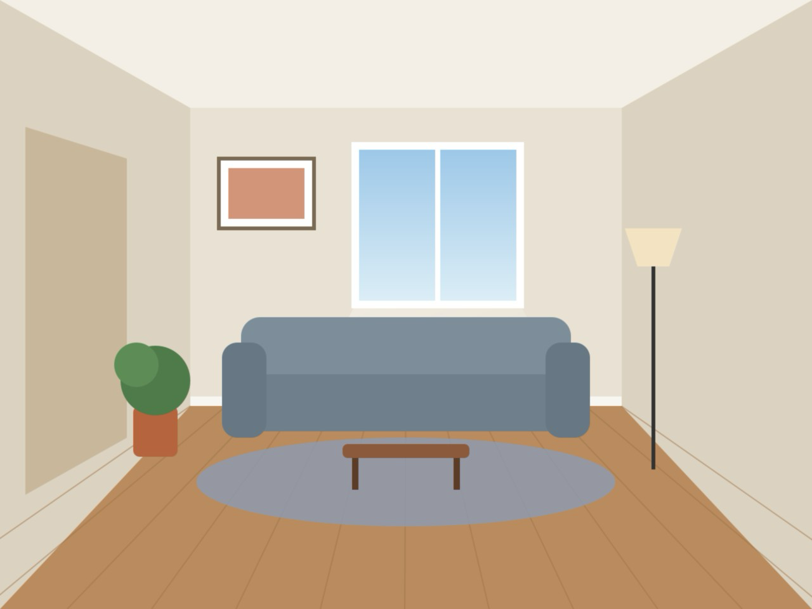
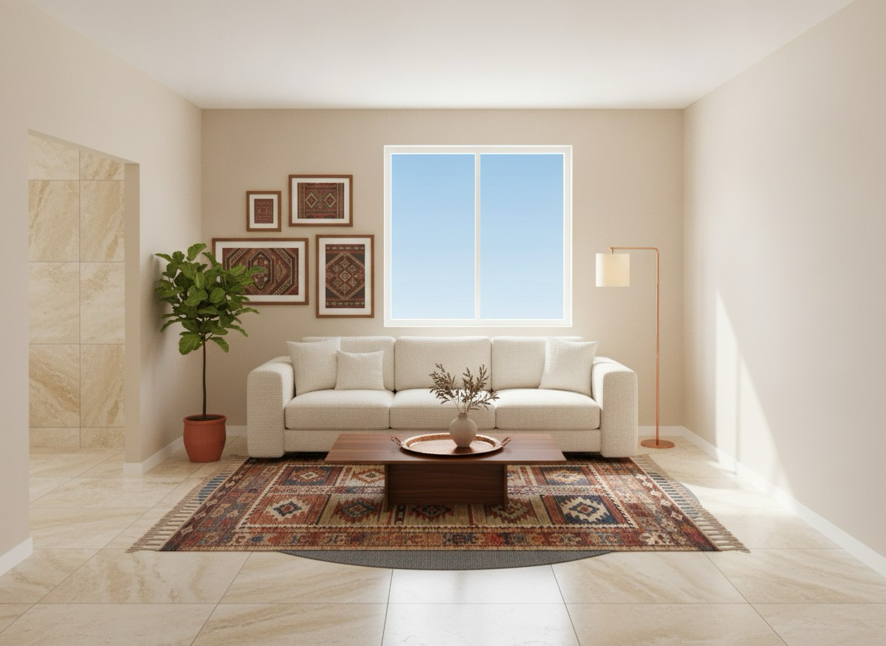
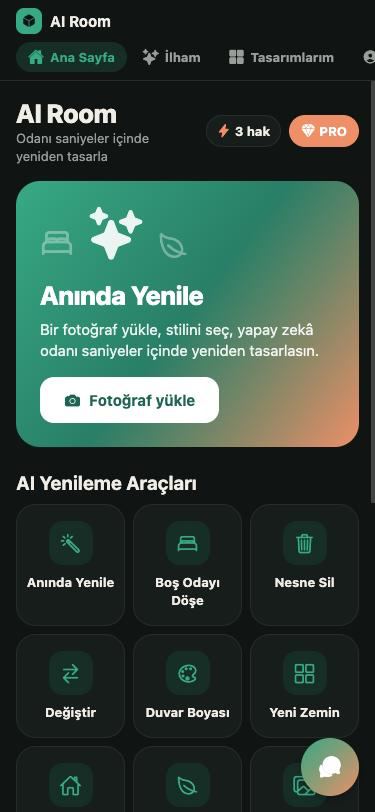
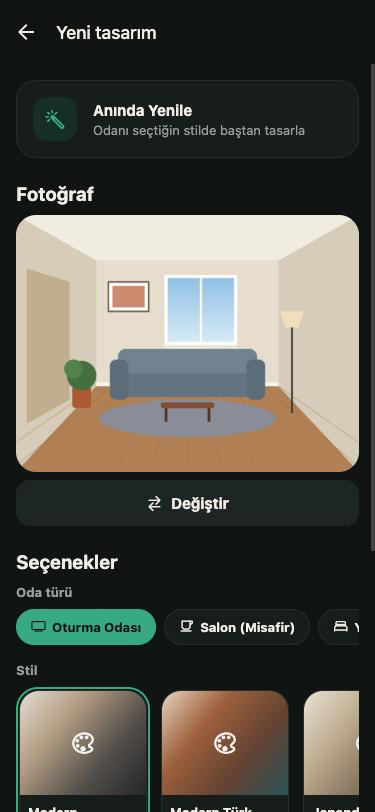
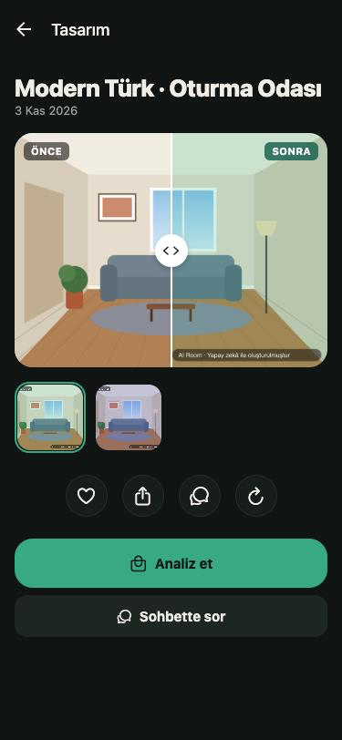
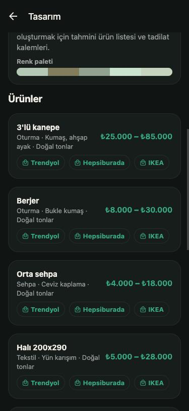
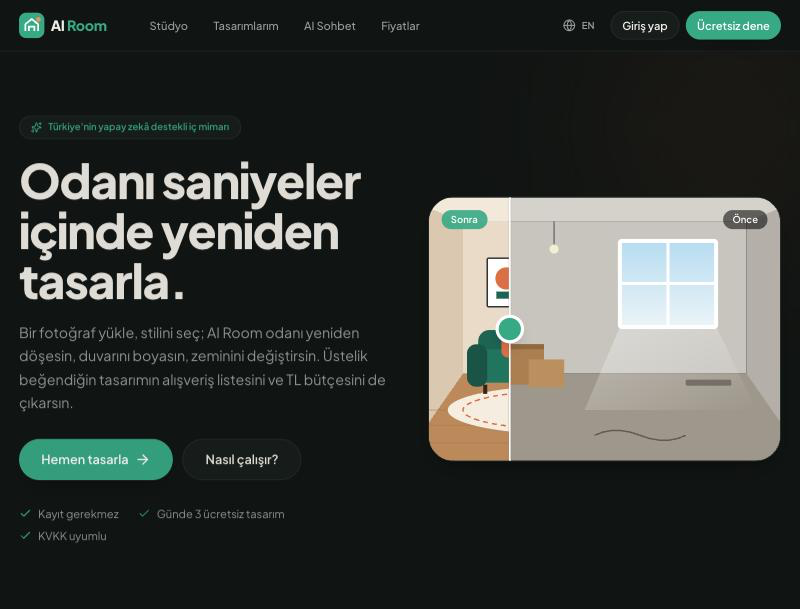
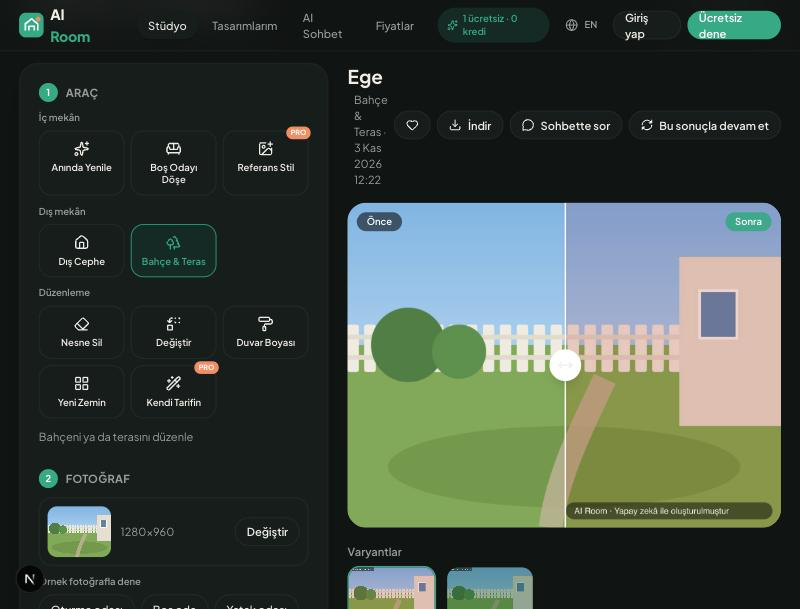
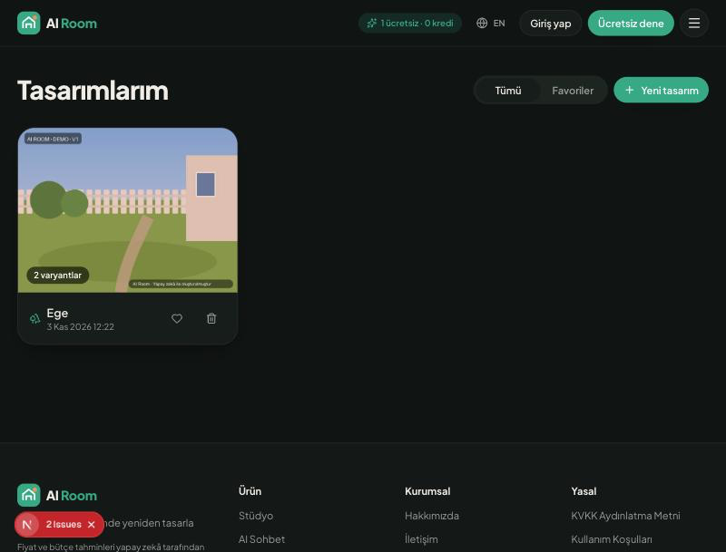
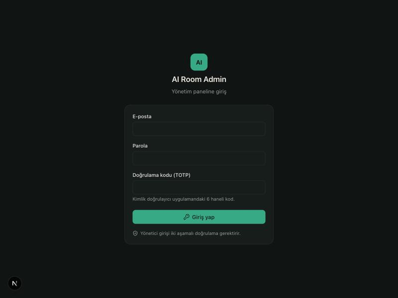
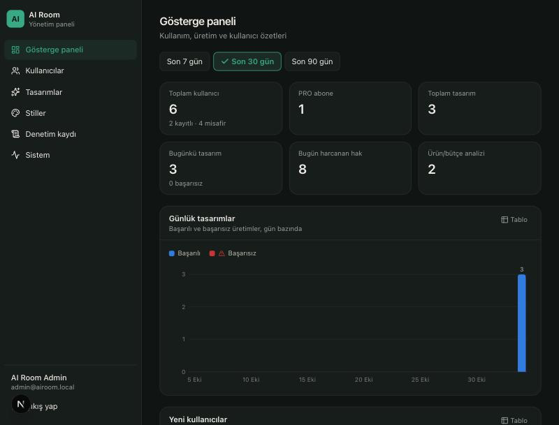
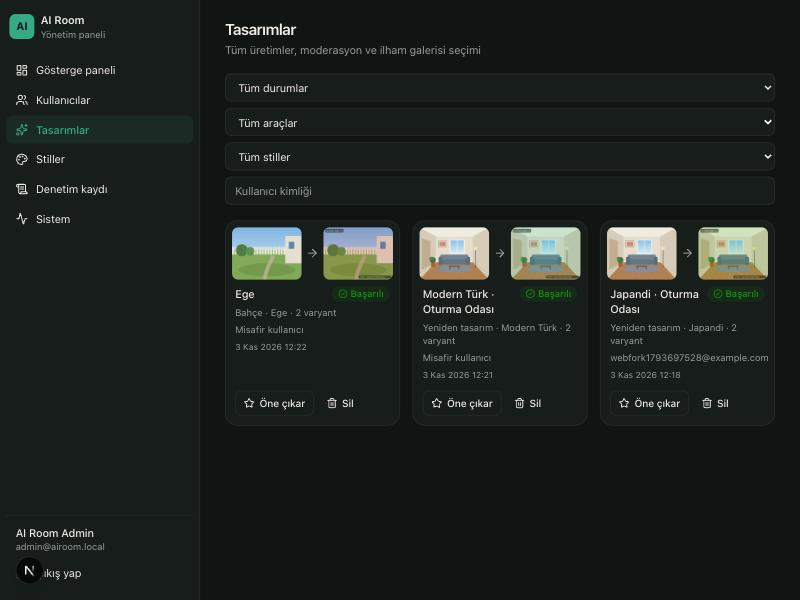
Gereksinimler:
Ayrıntılar depo kökündeki README.md ve her uygulamanın kendi README dosyasında.
# 1) Backend (port 4000) cd apps/backend && cp .env.example .env # DATABASE_URL + 4 sır (openssl rand -base64 48) npm install && createdb ai_room && npx prisma migrate deploy npm run db:seed # 15 stil + TOTP'li admin → data/admin-credentials.txt npm run build && npm run start:prod # 2) AI servisi (port 8001, INTERNAL_TOKEN = backend AI_INTERNAL_TOKEN) cd apps/ai-service && cp .env.example .env && uv sync uv run uvicorn app.main:app --port 8001 # IMAGE_PROVIDER=mock | gemini | replicate # 3) İstemciler cd apps/web && npm install && npm run dev # http://localhost:3000 cd apps/admin && npm install && npm run dev # http://localhost:3001 (TOTP: npm run admin:otp) cd apps/mobile && npm install && npx expo start # i = iOS simülatör, w = web # 4) Testler cd apps/ai-service && uv run pytest # 8 test cd apps/backend && npm test # birim testleri node scripts/smoke.mjs # 28 uçtan uca kontrol
Gerçek sağlayıcılar: IMAGE_PROVIDER=gemini + GEMINI_API_KEY, IMAGE_PROVIDER=replicate + REPLICATE_API_TOKEN, ANTHROPIC_API_KEY (Claude). Üretimde mock sağlayıcıyla açılış reddedilir.
Docker: depoda bir docker compose dosyası var; bu makinede Docker olmadığı için çalıştırılarak denenmedi.
| BFF | Backend-for-Frontend: tarayıcı ile API arasındaki sunucu katmanı; token'ı httpOnly çerezde saklar. |
| IAP | Uygulama içi satın alma (App Store / Google Play). |
| ASO | Uygulama mağazası optimizasyonu. |
| MFA / TOTP | Çok faktörlü kimlik doğrulama / zaman tabanlı tek kullanımlık kod (RFC 6238). |
| Sanal döşeme | Virtual staging: boş mekân fotoğrafını yapay zekâ ile mobilyalı göstermek. |
| RoomPlan / LiDAR | Apple'ın oda tarama API'si ve derinlik sensörü; gerçek ölçü sağlar. |
| Yapı koruma | Yeniden tasarımda pencere, kapı, duvar ve perspektifin aynı kalması. |
| Affiliate | Yönlendirilen satıştan komisyon alınan ortaklık modeli. |
| YBBO | Yıllık bileşik büyüme oranı (CAGR). |
| ARPPU / LTV | Ödeme yapan kullanıcı başına gelir / müşteri yaşam boyu değeri. |
| DHV | Dijital hizmet vergisi (2026'dan itibaren %5). |
| P0 / P1 | Red-team kataloğu öncelikleri: P0 ilk güvenli yayın öncesi temel bariyer, P1 ilk derinlik dalgası. |